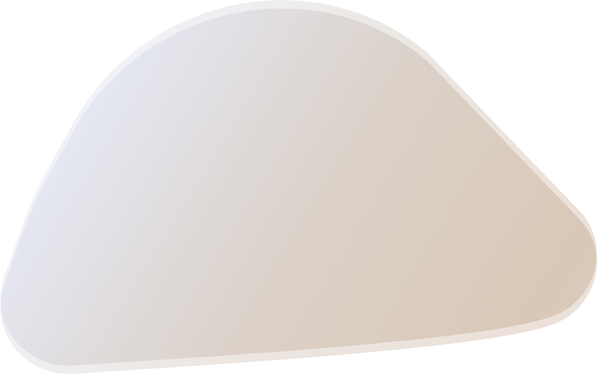

-

CHOPIN
Um pianista polonês radicado na França e compositor para piano da era romântica. É amplamente conhecido como um dos maiores compositores para piano e um dos pianistas mais importantes da história.
-

BETHOVEN
Considerado um dos pilares da música ocidental, Bethoven é conhecido pelo incontestável desenvolvimento, tanto da linguagem como do conteúdo musical demonstrado nas suas obras, permanecendo como um dos compositores mais respeitados e mais influentes de todos os tempos.
-

MOZART
Autor de mais de 600 obras, Wolfgang Amadeus Mozart foi um compositor compentente desde os cinco anos de idade. Possuiu habilidades no teclado e violino. Uma de suas maiores composições é a Sinfonia n°40.
